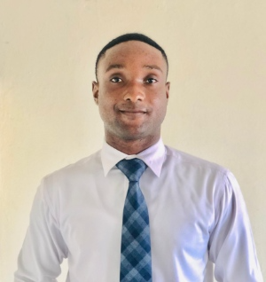

David Agbenyegah Bieku
About Me
Hi, nice to meet you! My name is David Agbenyegah Bieku, and I am glad you gave me the opportunity to tell you more about myself. I am very excited about developing my career in software development and am passionate about building computer systems that are useful to people.
I have acquired certifications that qualify me for the role of senior software developer. In my previous role, I led a team of highly skilled professionals to develop a database that significantly improved company performance.
I am friendly, a good leader, and a team player. With me on board, I believe I can contribute exceptionally and eventually help lead this company to its full potential. My interests include technology, design, and coding, as well as outdoor activities and learning new skills.